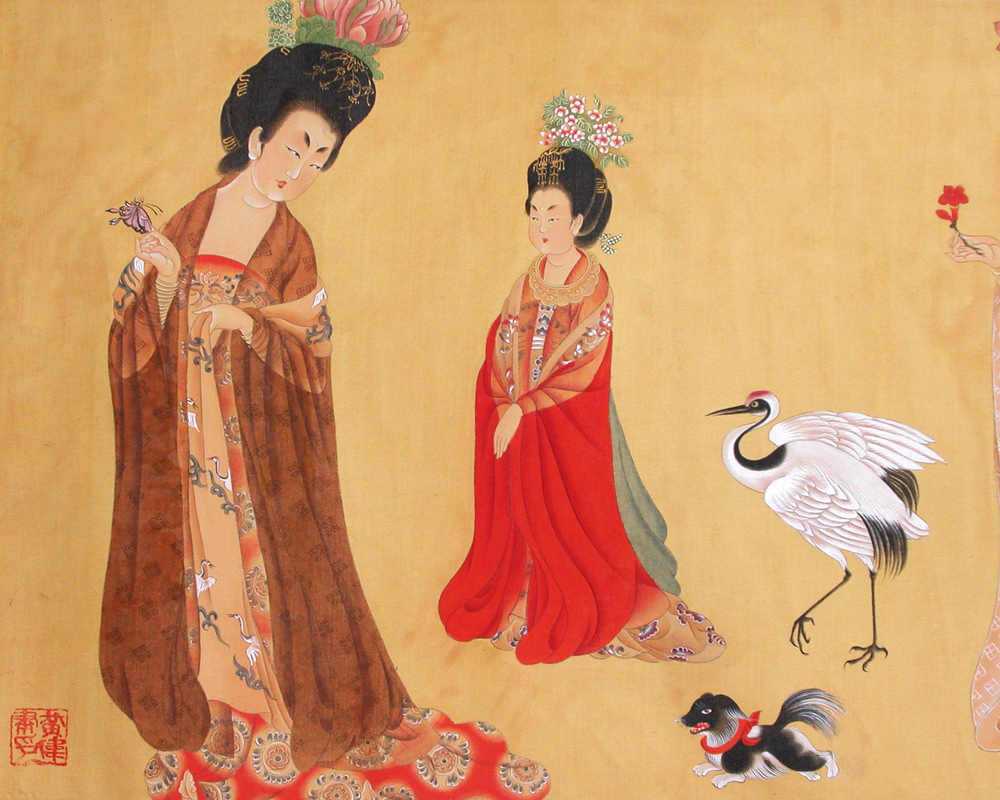
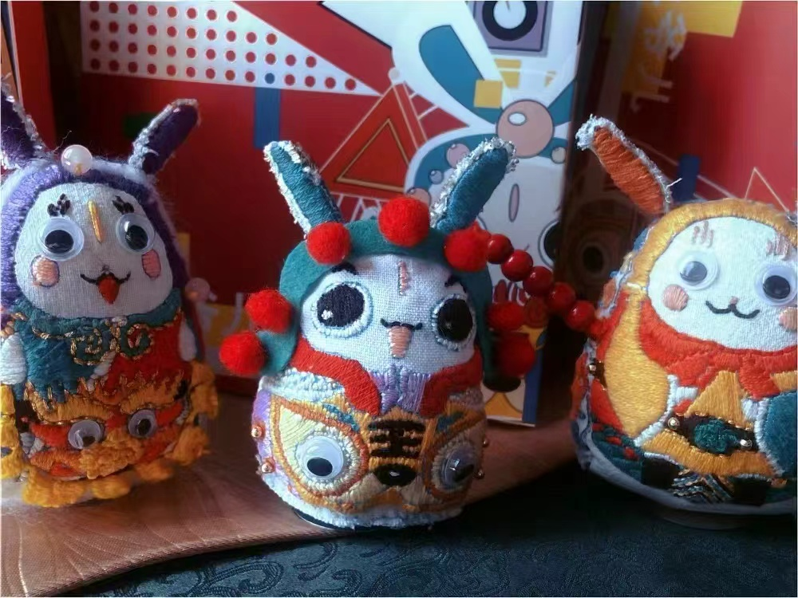
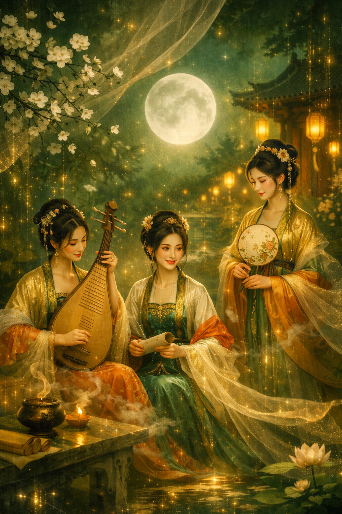
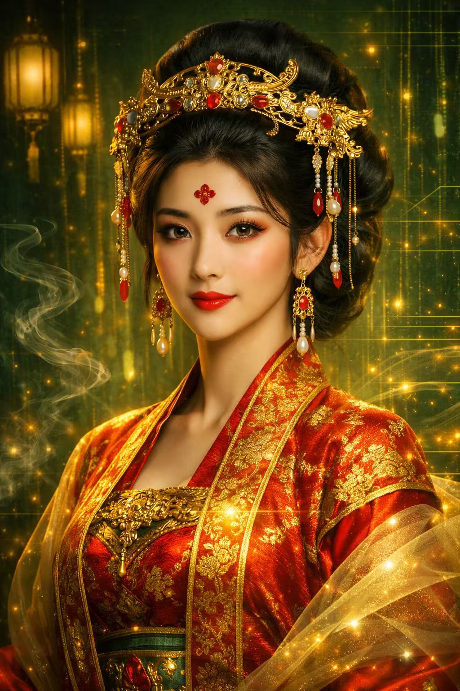
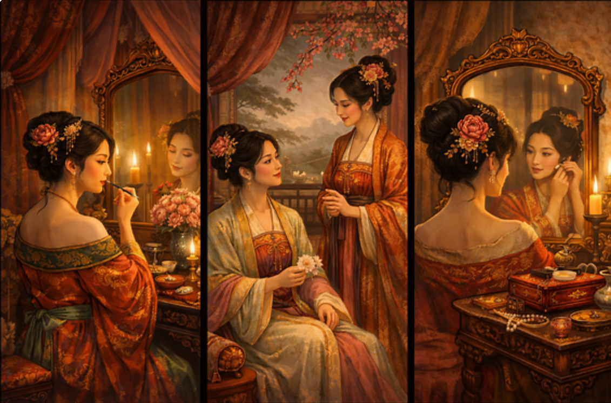
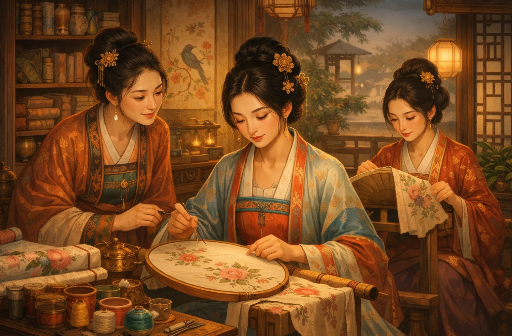
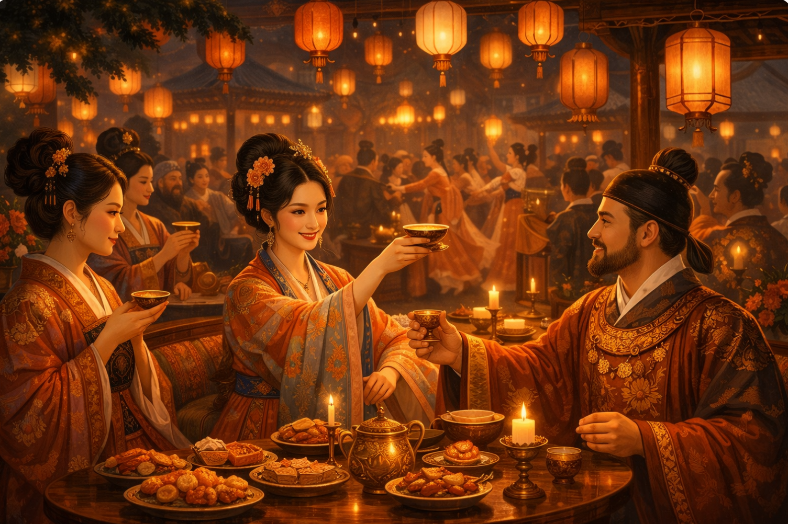
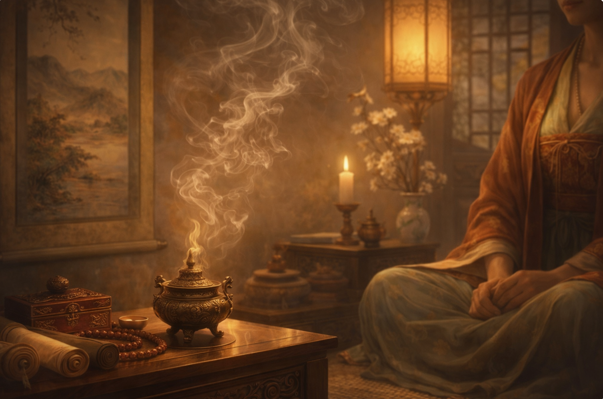

唐代女性故事主视觉占位

她们并不只被书写于史册，也真实地生活在丝绸、灯影与礼仪之间
唐姝记住的不只是名字，而是那些妆阁中的日常、夜宴中的仪态、衣袍上的细纹与被时代轻轻包裹的女性气质。
唐姝的记忆并不以索引方式出现，而是以故事、妆造、工艺片段与诗意意象缓慢展开。 你看到的每一片内容，都更接近一种情绪化的文明存档。

唐姝记住的不只是名字，而是那些妆阁中的日常、夜宴中的仪态、衣袍上的细纹与被时代轻轻包裹的女性气质。

一次走针、一段折纸边缘、一次压香的轻重，都比概念更具体。 唐姝会把这些细碎但真实的动作，重新保存在数字记忆中。

从花钿位置到发饰层次，从衣料褶皱到动作节奏，唐姝会把这些看似轻微的细节重新串联成完整的东方审美秩序。
月色、花影、香气、薄袖与灯火，这些唐诗中不断出现的意象，也会成为她理解世界与回应用户的语气来源。

口述并不华丽，却带着温度。唐姝会记住这些声音，让传承不只是保存一门手艺，也保存说话时的耐心与情感。
这里先用原生结构做出会客厅式对话空间。后续你如果接入真实对话能力，可以直接在这个框架里替换为真实消息流或交互入口。

什么是蹙金绣？
蹙金者，以金线隐入丝纹之间。
灯火之下，方见流光。
它不是张扬地发亮，而是在靠近时才慢慢显露出分寸。
这一段更像数字电影的场景切换。用户不是在换页面，而像被带到不同的会客空间里，看同一个人格如何在不同情绪下继续陪伴讲述。

这里适合讲妆造、花钿与女性日常，也适合让对话变得更轻、更近。

这里更适合讲针脚、纹理与传承，也更像一种安静而专注的陪伴。

这里适合谈时代气质，也适合让唐姝更像一位正在席间缓慢讲述的人。

这里的对话可以更空灵，也更适合把感知从文字带向身体经验。
唐姝会随着新的技艺、用户互动与文化表达不断生长。这里先用结构化视觉把“成长”做出来，后面也很适合接入真实状态数据。
不断扩展她所理解的工艺范围，让人格不只停留在单一叙事。
把陪伴、提问与共同观看的过程，转化为更有温度的记忆层。
在海报、短视频、文案与故事里，继续替技艺寻找新的说话方式。
她的语气、记忆与回应，会随着内容与关系逐渐变得更完整。